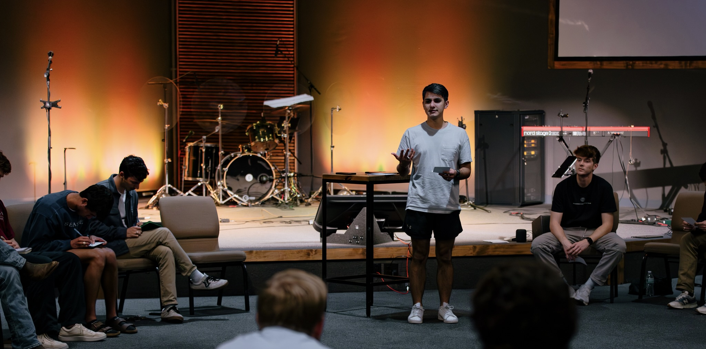
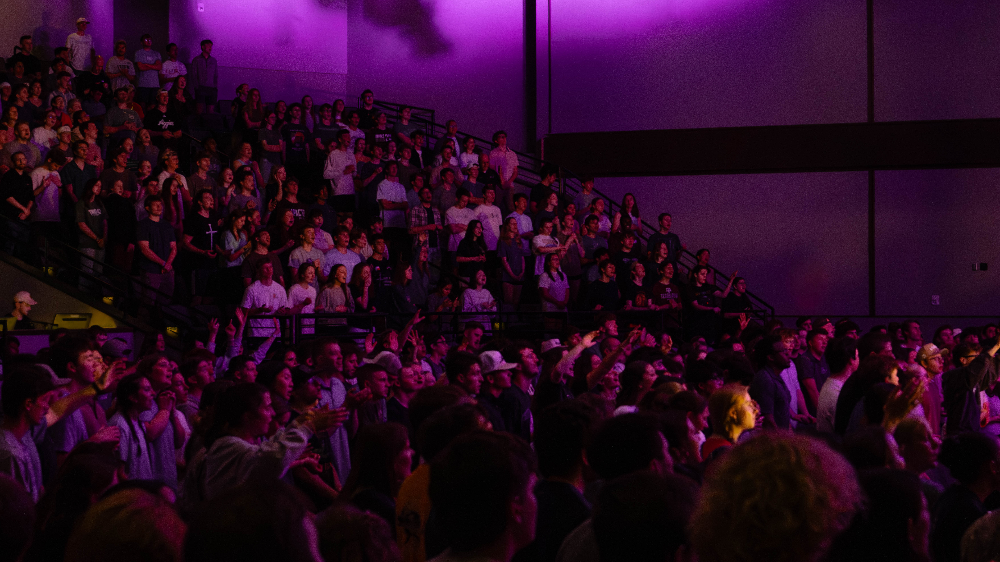
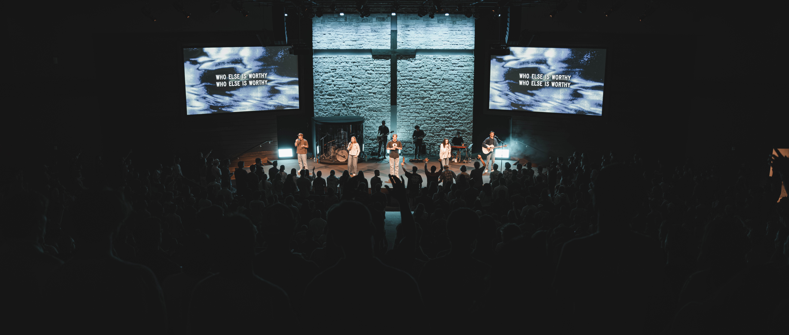
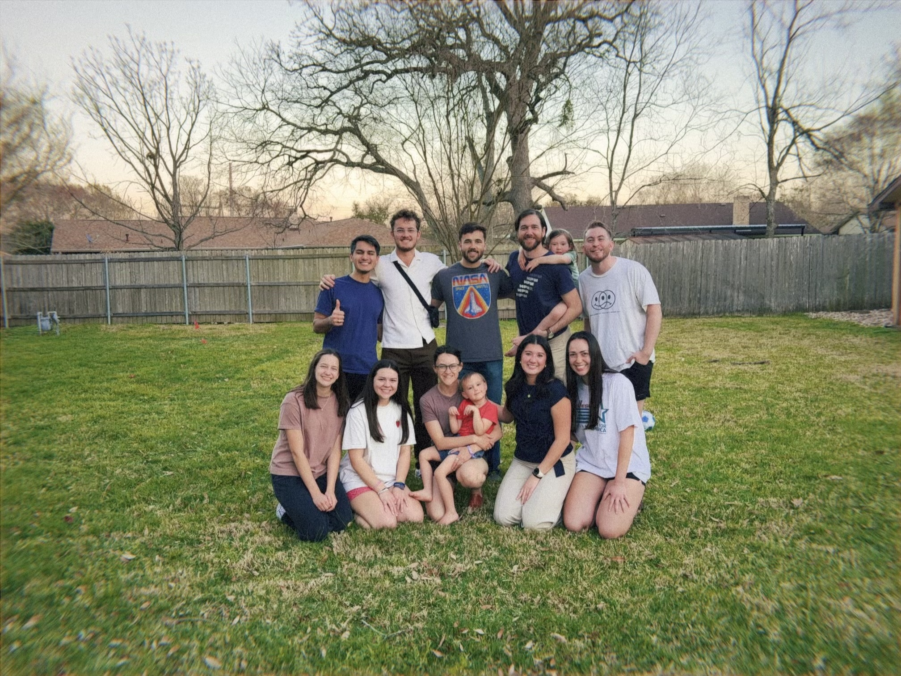

Ministry Update - March 2026
A ministry update from Logan Augustine. Much Love!
This month has been full of excitement and opportunities! Our college ministry has been full of amazing stories recently, and so many students have been taking steps towards following Jesus more closely. I'm excited to share some things I've been up to with you!

Have you ever been in one of those situations where you just don't know what to say? A couple weeks ago, I was in one of those conversations. We had just wrapped up an awesome event focused on godly purity for college men, and this sophomore that I've never met came up to me, weeping, and I mean big, heavy crying.
For about a minute he couldn't even get any words out. I tried to ask him his name and ask what he needed, but he just couldn't. So all I could do was give him a hug.
When he was finally able to form sentences, he told me, "Tonight was the breaking point. I've been living in so much sin...even just last night I was with a girl I barely know." He went on to tell me about so many challenging things that he'd been going through, and how he just felt beat up.
But then he said, "Tonight, I realized that God wants me to live for him. He wants me to stop sinning and love him."
We talked for over an hour. I got home really late. He cried... a lot. And it was one of the most beautiful conversations I've ever had.
Through that conversation, God reminded me of a few things. First of all, no one is too far for Him to reach. Second, our efforts are not in vain. We need to have as many opportunities aas possible to proclaim truth to all people. Third, sometimes all you can do it give that person a hug and trust that the Holy Spirit will give you the words to say.
Exciting Events!
We've had a lot of excitement around the Anderson College Ministry these days! God has blessed us with amazing students and plenty of opportunities to help them find and follow Jesus through gatherings that are large and ones that are more personal. Here's some highlights from a few!
College Fun Day

[Caption for image one — event or moment description]
In our college ministry, we love to have fun. It's the perfect way to invite new students, build relationships with returning ones, and help students grow true community with one another.
We hosted a whole day of fun for students returning to campus after Winter Break. We had a coffee cart, dodgeball tournament, board games, and ended the night with a silent disco! Everyone had a blast, and so many new friendships got to grow!
College Men's Event

[Caption for image one — event or moment description]
Something we really value in our ministry is vulnerability and helping one another grow towards God. And so our college men gathered for a night to worship, grill some burgers, and talk about purity, and we helped each other to pursue God's calling to flee from sin.
I got to host the event, grill, and speak to all the guys about the next steps they can take towards accountability and understanding their sin. It was an amazing night!
Collegiate Day of Prayer
Every year for the last 200 years, college students have met on campuses around the world to pray for movements of the Lord to begin at their schools. At Texas A&M we continue the tradition and hundreds of students from churches all over town gather to pray for God to move.
This year we gathered to pray for three points: (1) that the Church in College Station would be alive with zeal for Christ, (2) that students who don't know Jesus would come to know Him through our sharing, and (3) that the nations around the world would be reached through our students going, supporting, and praying. It was an amazing night of worship and prayer!



Collegiate Day of Prayer at Grace Creekside
I had the opportunity to contribute towards writing and editing a 40 Day Devotional in preparation for Collegiate Day of Prayer, with the focus on fasting and the three prayers above. If you want to check it out on YouVersion, click this link!

Slovakia Reunion
Exactly one year ago, I had the opportunity to lead a team of students on a mission trip to Slovakia. We met Slovak students, learned about the culture and the church in Central Europe, and shared the gospel on college campuses. This week, we got to reunite with the missionaries who are in town for a bit! It was so awesome to get to catch up with them, hear about the students and staff that we met last year, and encourage each other.
Please Pray...
- That students in College Station would continue to realize God's love for them, and that they would take that truth to the ends of the Earth.
- For Emma and me as we come to the end of our programs. Emma graduates from PT school in May (woohoo!) and I finish the Fellows Program around the same time. Pray that the Lord would show us exactly where we need to go for Him next.
I hope you find some encouragement from these stories about what God is doing in College Station. He is powerful, He is leading students towards Himself, and He desires that all people from all walks of life know Him. So I'm finding my part in His plan!
Thank you for you continued generosity to me. I could not do any of this work without you, so know that the Lord is using you to impact students in College Station. If you need me, I'll be where the students are!
In Christ,
Logan Augustine, 3/9/26